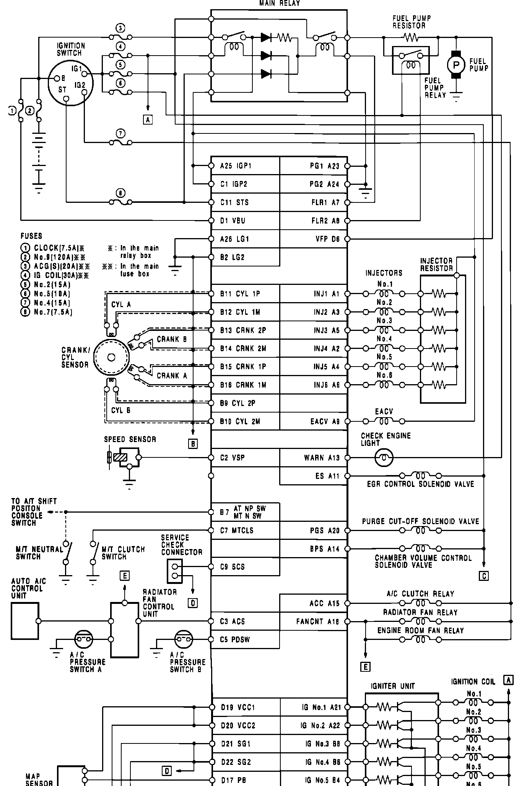
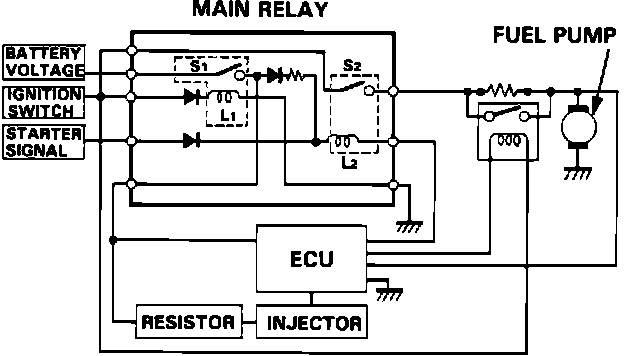
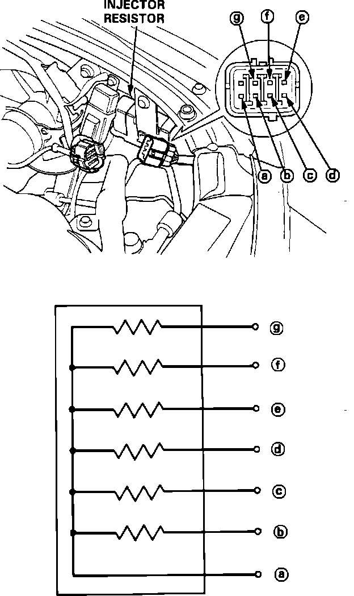

<!DOCTYPE html>
<html>
  <head>
    <title>Electrical Diagrams — 1991 Acura NSX V6-3.0L DOHC Service Manual | Operation CHARM</title>
    <meta name='description' content="Detailed repair manual for the 1991 Acura NSX V6-3.0L DOHC.">
    <link rel='stylesheet' href="../style.css">
    <meta name='viewport' content='width=device-width, initial-scale=1.0' />
  </head>
  <body>
    <div class='theme-colors header'>
      <div class='branding'><b>Operation CHARM</b>: Car repair manuals for everyone.</div>
<div class=breadcrumbs><a class='breadcrumb-part' href="../">Home</a> <b>&gt;&gt;</b> <a class='breadcrumb-part' href="../Acura/">Acura</a> <b>&gt;&gt;</b> <a class='breadcrumb-part' href="../Acura/1991/">1991</a> <b>&gt;&gt;</b> <a class='breadcrumb-part' href="../index.html">NSX V6-3.0L DOHC</a> <b>&gt;&gt;</b> <a class='breadcrumb-part' href="0.html">Repair and Diagnosis</a> <b>&gt;&gt;</b> <a class='breadcrumb-part' href="0.html#Powertrain%20Management/">Powertrain Management</a> <b>&gt;&gt;</b> <a class='breadcrumb-part' href="0.html#Powertrain%20Management/Ignition%20System/">Ignition System</a> <b>&gt;&gt;</b> <a class='breadcrumb-part' href="0.html#Powertrain%20Management/Ignition%20System/Relays%20and%20Modules%20-%20Ignition%20System/">Relays and Modules - Ignition System</a> <b>&gt;&gt;</b> <a class='breadcrumb-part' href="566.html">Ignition Control Module</a> <b>&gt;&gt;</b> <a class='breadcrumb-part' href="566.html#Diagrams/">Diagrams</a> <b>&gt;&gt;</b> <a class='breadcrumb-part' href="5348.html">Electrical Diagrams</a></div></div>
<div class='main'>
<h1>Electrical Diagrams</h1><h3>�D�Electrical Connections:</h3><div class='oxe-image'></div><br><br><br><br><b>ELECTRICAL SCHEMATIC</b><br><br><h3>Main Relay Schematic:</h3><div class='oxe-image'></div><br><br><br><br><b><a href="11.html">MAIN RELAY</a></b><br><br><h3>Injector Resistor:</h3><div class='oxe-image'></div><br><br><br><br><b>INJECTOR RESISTOR</b><br><br>For additional information regarding electrical diagrams, refer to <b>CHASSIS ELECTRICAL DIAGRAMS</b>.</div>
<div class="theme-colors footer">
  <i>pro multis</i> · <a href="../about.html">About Operation CHARM</a>
</div>
<script src="../script.js"></script>
</body>
</html>
